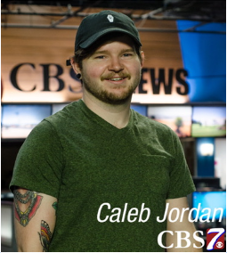

Howdy! I'm Caleb Jordan
I am a broadcast engineer and software developer in West Texas.
As a broadcast engineer, my software development interest are:
- Automation, to give users more control of their broadcasting equipment.
- Websites that provide streaming services for content creators.
- Working with others to provide a simple and easy solution for content creation.
Please have a look at my website and feel free to contact me!
About Caleb
After working with automation as a news director and installing automation systems as a broadcast engineer, I fell in love with automation. While I enjoyed TV automation, I love online streaming services and the content that creators provide. I want to bring automation to those creators so that they can have even more control over their content creation.
As a student of Thinkful I've begun learning the steps necassary to achieve my goals.
In my free time I like to fool around with 3D-printing. I use both FDM and Resin printers, sometimes I make useful things but mostly miniature scaled models. Which leads to my other primary hobby which is table top gaming with the miniatures I print. It's an extremely fun and rewarding hobby to do with friends.
If you're looking to hire a new devolper who is no stranger to big projects please reach out. Or if you are looking to collab vist my GitHub
Contact Caleb
I'd love to work together
- LinkedIn -->
- GitHub